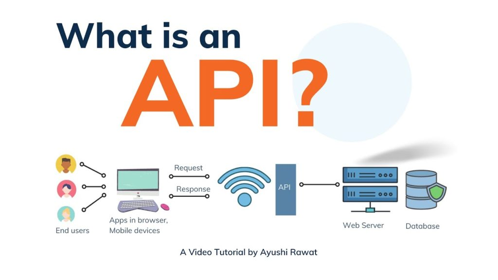

Tekening 3-lagenmodel van mijn telefoon

Apps en API´s
Apps zijn programma's die specifiek zijn ontworpen om bepaalde taken uit te voeren, zoals een mail app of een browser. Deze apps maken gebruik van API’s (Application Programming Interfaces), die als een brug werken tussen de toepassingslaag en de lagere lagen van het systeem. Een API zorgt ervoor dat de app gegevens kan opvragen, verwerken en communiceren met andere systemen, zonder dat je direct met allemaal moeilijke programma´s te maken hebt als gebruiker.
